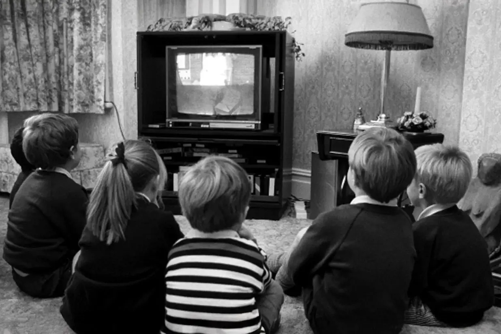

Para bien o para mal
El dilema en torno al uso de IA.
El dilema en torno al uso de IA.
La inteligencia artificial (o IA) ha revolucionado nuestras vidas en los últimos años. Desde buscar respuestas y obtener información hasta crear códigos informáticos.
¿Cómo sabemos si la estamos usando bien o mal? Y más importante, ¿cómo está llevando el mundo educativo esta tecnología?
Para analizar esto, hay que tomar en cuenta que cada vez que en la historia ha salido una nueva tecnología, el debate sobre si esta va a ser revolucionaria invade la escena pública. Pasó con el cine, cuando en 1913 Sir Thomas Edison dijo: “Muy pronto, en los colegios los libros se considerarán objetos obsoletos”. También con la televisión, cuando Lyndon Johnson, presidente de Estados Unidos, aseguró que los alumnos aprenderían dos veces más rápido que antes.
Este fenómeno fue estudiado por el historiador Larry Cuban. Identificó un patrón consistente que se puede dividir en cuatro fases: euforia, credibilidad científica, decepción y culpabilización. En la fase de euforia, todos proclaman las bondades de la nueva tecnología. En la credibilidad científica, comienzan a publicarse artículos y estudios para respaldar el tema. La decepción llega cuando el supuesto beneficio no es exacto al que se esperaba. En la cuarta fase se busca el responsable de haber vendido esta tecnología.
Si bien se habla de IA desde 1956, solo en 2022 se hizo mundialmente conocida con la llegada de OpenAI y su herramienta ChatGPT.
Los usos de la inteligencia artificial son tan variados que a veces los límites se desdibujan. Un buen uso de la IA se entiende dentro del marco donde imita el comportamiento humano, como aprender cosas y resolver tareas, es decir, lograr una mayor productividad enfocada en lo laboral. Un mal uso, en cambio, se refiere a las diferentes formas de usar la IA para cosas que no son del todo buenas.
¿Dónde se pueden ver estos casos? Un ejemplo puede ser el plagio educativo, los deepfakes y la desinformación a través de noticias falsas, la suplantación de identidad, entre otros.
Si no nos creen, les contamos algunos casos actuales que han recorrido el mundo:

Todos nos preguntamos cómo va a evolucionar: ¿impactará nuestras vidas? ¿Será solo una moda o ha llegado para quedarse? Para resolver estas preguntas y poder aplicar la IA de forma ética es que se han creado diferentes iniciativas. Una de ellas es fAIr LAC, del Banco Interamericano de Desarrollo (BID).
Esta división del BID busca algo que ellos llaman “equidad y justicia algorítmica”, para evitar que los algoritmos sean entrenados con sesgos que repliquen desigualdades en LatAm. A la vez, se preocupa por la seguridad de la información y el respeto de los derechos humanos dentro de los algoritmos.
Aún no sabemos cómo va a ser el futuro a medida que avance la inteligencia artificial, pero sí hay algunas cosas claras que los expertos recalcan al usar la tecnología de forma responsable:
Una preocupación que crece día a día es el uso de la inteligencia artificial en niños y adolescentes para fines educativos. Esto hace que los colegios y los docentes tomen dos caminos: algunos lo prohíben estrictamente y restringen su uso, mientras otros los ayudan a entender cómo funciona y a juzgar con criterio para sacarle el mejor provecho posible. Como dice el refrán: “si no puedes contra ellos, úneteles”.
¿Será que la educación también cambiará en torno a la forma de enseñar y aprender?
 Tecnología
TecnologíaSi eres como yo y revisas TikTok e Instagram constantemente, te habrás dado cuenta de que estas redes son casi como un experimento social.
 Tecnología
TecnologíaHablamos mucho de inteligencia artificial. La tenemos integrada en nuestra vida, nos ayuda en nuestros trabajos y le preguntamos cosas de…
 Tecnología
TecnologíaDurante años hemos pensado en la inteligencia artificial como algo súper frío: servidores gigantes, computadores procesando datos y…